🇫🇷 Visualisations du projet
Cette page regroupe les graphiques générés pour l’analyse du jeu de données Iris.
🇬🇧 Project Visualisations
This page displays the plots generated for the Iris dataset analysis.
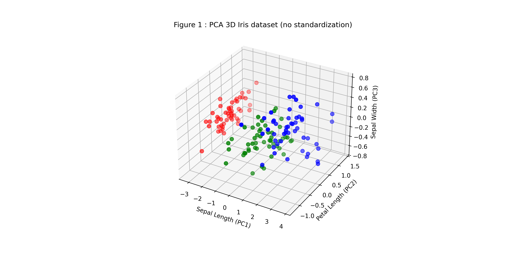
Figure 1 - PCA 3D (no standardization)
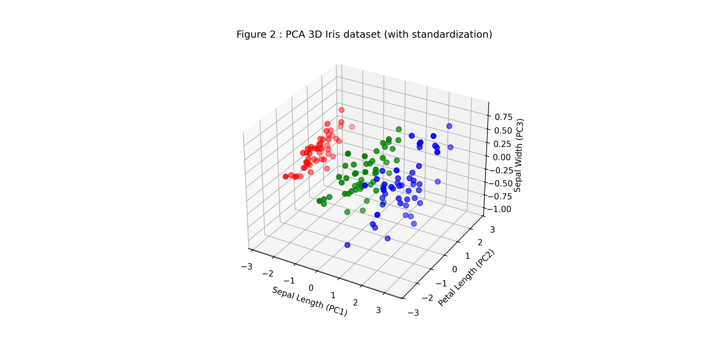
Figure 2 - PCA 3D (with standardization)
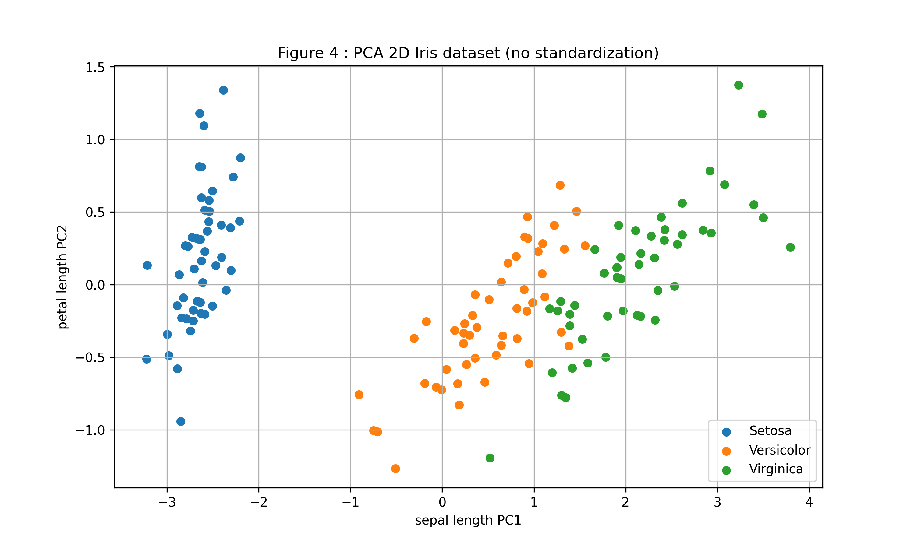
Figure 4 - PCA 2D (no standardization)
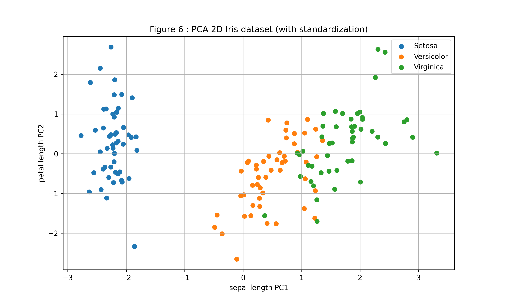
Figure 6 - PCA 2D (with standardization)
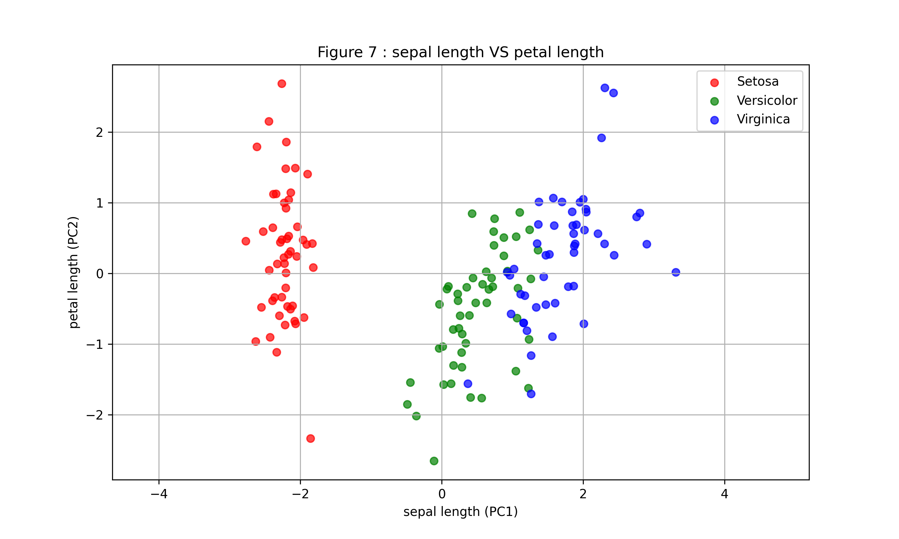
Figure 7 - Sepal length vs Petal length
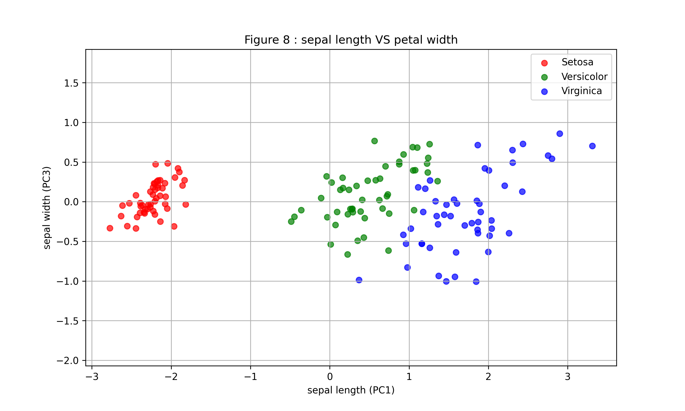
Figure 8 - Sepal length vs Petal width
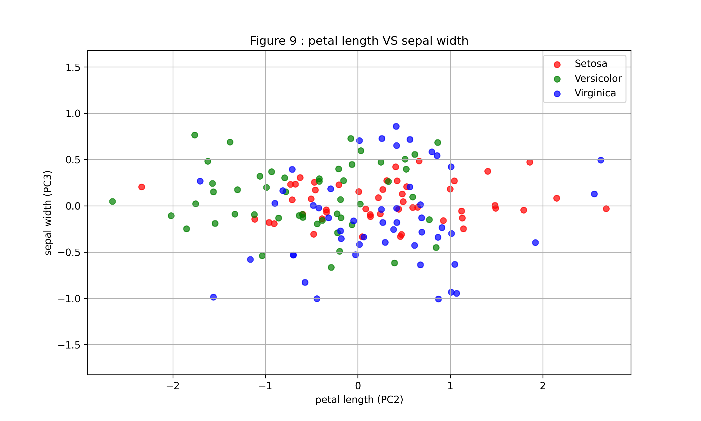
Figure 9 - Petal length vs Sepal width
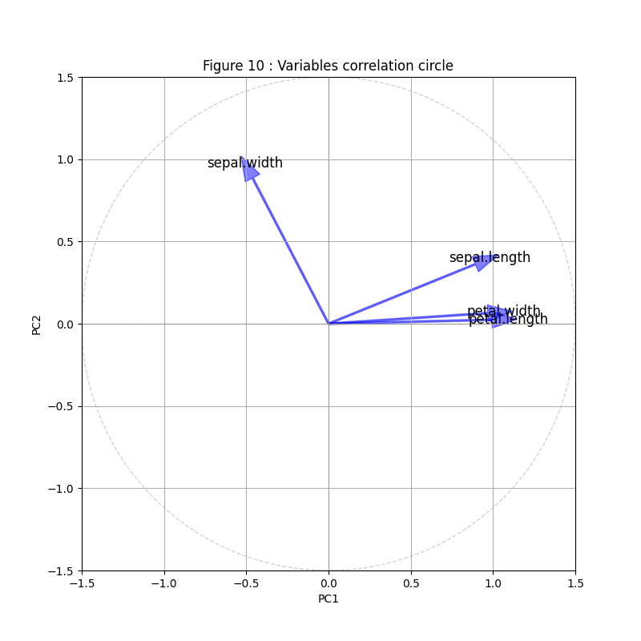
Figure 10 - Variable correlation circle
 Figure 11 - PCA Biplot1: Variance and individuals
Figure 11 - PCA Biplot1: Variance and individuals
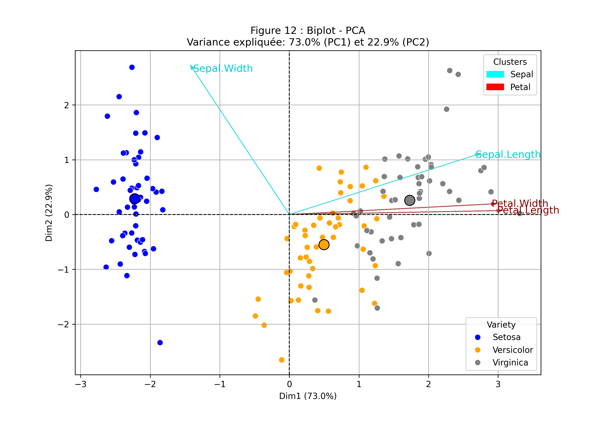
Figure 12 - PCA Biplot2
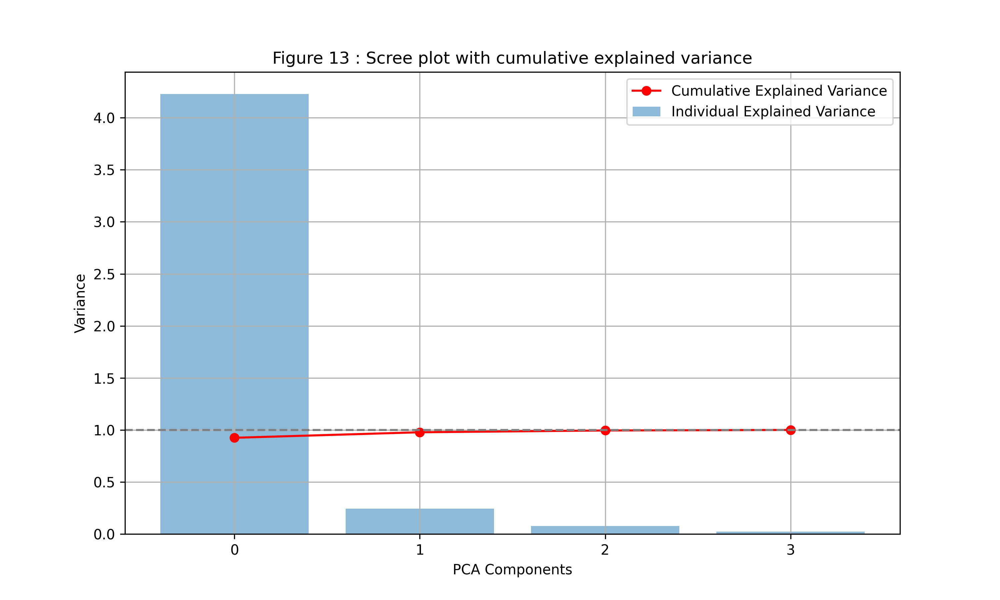
Figure 13 - Scree plot (cumulative explained variance)
 Figure 14 - Scree plot of explained variance
Figure 14 - Scree plot of explained variance
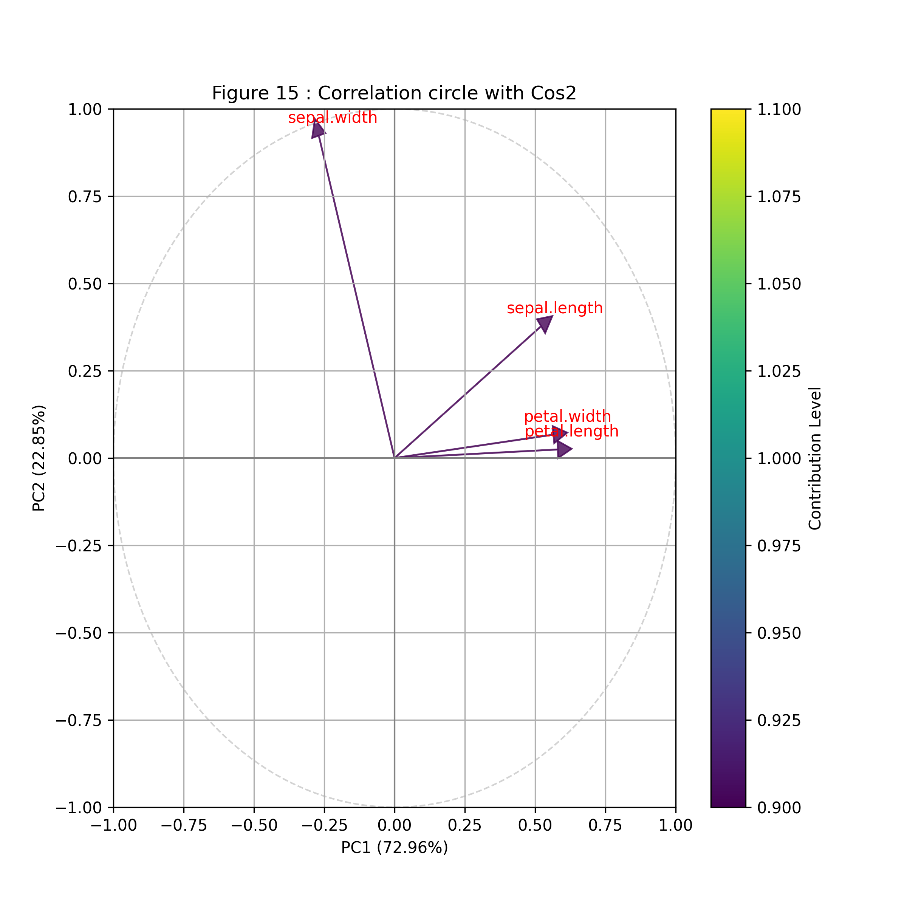
Figure 15 - Correlation circle with Cos2
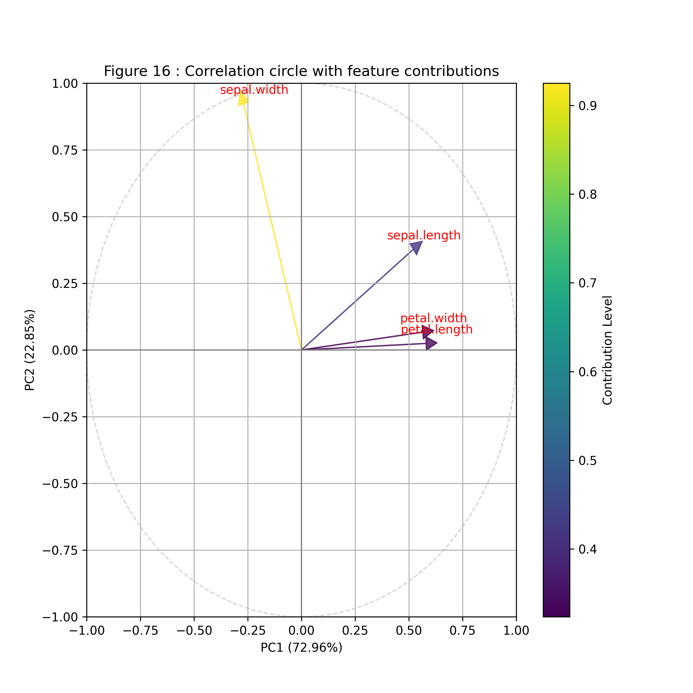
Figure 16 - Correlation circle with feature contributions
.png) Figure 17 - Individuals PCA on factorial plan
Figure 17 - Individuals PCA on factorial plan
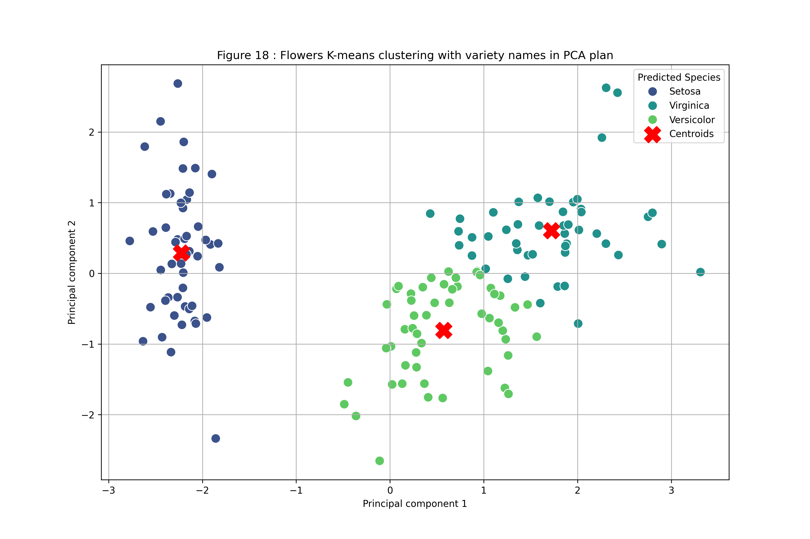
Figure 18 - K-means clustering with variety names
 Figure 19 - Number of clusters (Inertia)
Figure 19 - Number of clusters (Inertia)
.png) Figure 20 - Silhouette score vs number of clusters
Figure 20 - Silhouette score vs number of clusters
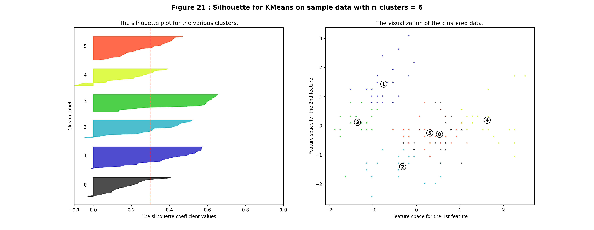
Figure 21 - Silhouette for KMeans on sample data